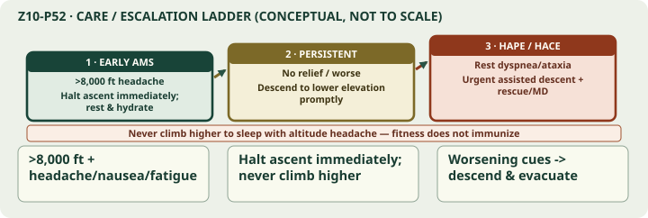

Z10-P52 · Wilderness medicine · New manuscript
Halt ascent immediately at early Acute Mountain Sickness (AMS) cues
Prevent mild altitude headache from progressing into fatal high-altitude lung or brain swelling.
When it applies · Mountain travel above roughly 8,000 feet (2,500 meters), regardless of athletic fitness.
Equipment · Elevation map, written symptom tracker, shelter/warmth, safe hydration, and pre-planned lower-elevation descent route.

Actions
- Suspect Acute Mountain Sickness (AMS) whenever a recently ascended traveler develops headache plus nausea, loss of appetite, unusual fatigue, dizziness, or poor sleep—remembering fitness does NOT protect against altitude illness.[X09]
- Stop ascending IMMEDIATELY—never climb higher to sleep with AMS symptoms; rest at the current elevation, stay hydrated and warm, avoid alcohol/sedatives, and monitor closely with a companion.[X09]
- Descend promptly to a lower elevation if symptoms fail to improve after rest or worsen in any way, rather than pushing over a high pass.[X09]
Failure recognition · Calling a throbbing high-altitude headache and vomiting "normal trail fatigue" and hiking 2,000 feet higher to camp.[X09]
Verify · Confirm ascent halted immediately, buddy monitoring is continuous, and a safe lower-elevation descent path is identified.[X09, M20]
Stop or change course · Any worsening headache, repeated vomiting, shortness of breath at rest, or stumbling balance transitions immediately to emergency HAPE/HACE descent.[X09]
Evidence and editorial notes
- M20 · NIH / MedlinePlus · First Aid Overview (current web edition)
- Section: Lay First-Aid Scope, Kit Readiness, and Documentation · Conditions: Pre-trip kit preparation and remote patient monitoring
Support: Maintain an inspected, unexpired first-aid kit matched to your actual training, keep written patient observations (time, responsiveness, breathing, symptoms, interventions) for EMS handoff, and practice skills in certified courses.
Limitations: Carrying advanced medical instruments without clinical training adds risk rather than capability. · Conflicting evidence: None; aligns with ARC and NPS-K.
Editorial note: Anchors kit sizing, SOAP-style lay observation logs, and scope-of-practice cards. · Specialist reviewer: Wilderness EMS and clinical education
Primary source · checked 2026-11-24 - X09 · CDC · Travel to High Altitudes (current web edition)
- Section: Travel to High Altitudes > Acclimatization, AMS, HAPE and HACE · Conditions: Mountain travel above ~8,000 feet (2,500 meters)
Support: Ascend gradually to acclimatize; recognize Acute Mountain Sickness (headache, nausea, fatigue) and life-threatening HAPE (shortness of breath at rest, cough) or HACE (ataxia, confusion), for which immediate descent and medical care are essential.
Limitations: Physical fitness does not prevent altitude illness; individual susceptibility varies unpredictably. · Conflicting evidence: None; aligns with NPS-MTN.
Editorial note: Core physiological evidence for Z12 mountain-altitude cards. · Specialist reviewer: Mountain medicine and high-altitude safety
Primary source · checked 2026-11-24
Source lineage · CDC Travel to High Altitudes; new manuscript · Classification · New manuscript.